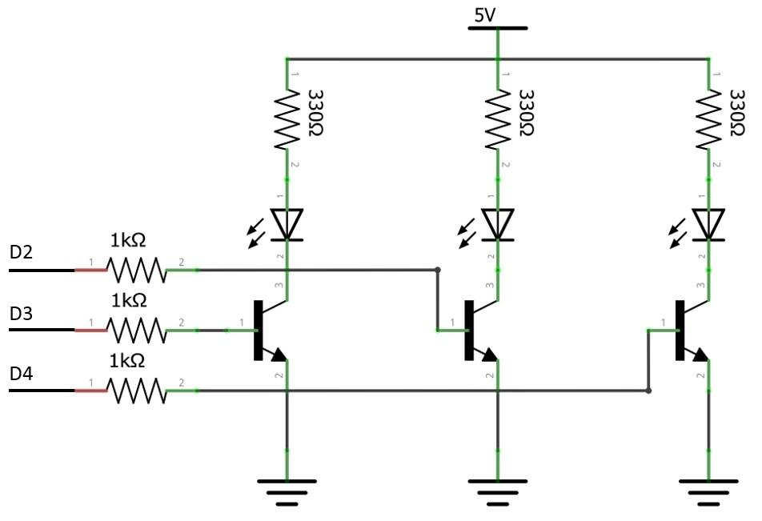
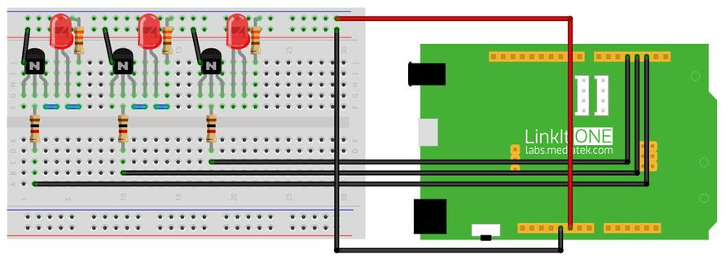

What We’re Doing
The experiments in the previous sections used only one LED but to show dazzling light effects lets use three LEDs. Make connections as shown in the Fig 4.2 and upload the code given below and observe the changes that happens.
Things you need
Schematic

Connection

Code
Please click on the button below to download the code for the kit:
You can unzip the file to the Examples folder of your Arduino IDE.
To access the demo code open:
File -> Examples -> Starter Kit for LinkIt -> Basic -> L4_Control_LEDs
const int pinLed1 = 2; // pin of led1 const int pinLed2 = 3; // pin of led2 const int pinLed3 = 4; // pin of led3 void setup() { pinMode(pinLed1, OUTPUT); // set all pin OUTPUT pinMode(pinLed2, OUTPUT); pinMode(pinLed3, OUTPUT); } void loop() { digitalWrite(pinLed4, LOW); // led4 off digitalWrite(pinLed1, HIGH); // led1 on delay(100); digitalWrite(pinLed1, LOW); // led1 off digitalWrite(pinLed2, HIGH); // led2 on delay(100); digitalWrite(pinLed2, LOW); // led2 off digitalWrite(pinLed3, HIGH); // led3 on delay(100); digitalWrite(pinLed3, LOW); // led3 off digitalWrite(pinLed4, HIGH); // led4 on delay(100); }
Troubleshooting
Making it better
Upload the following code with the same breadboard connection in order to obtain different flashing effects.
To access the demo code open:
File -> Examples -> Starter Kit for LinkIt -> Extend_Lesson –> L4_Control_LEDs_Speed
More ideas
Modify the existing code such that the frequency of LED blinking increases.
Reference